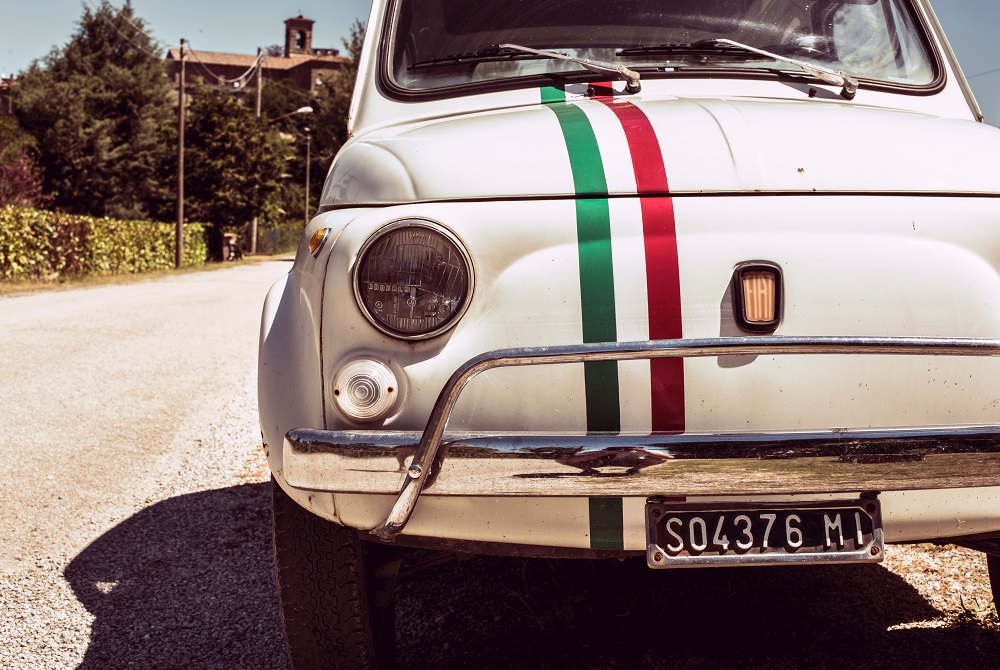
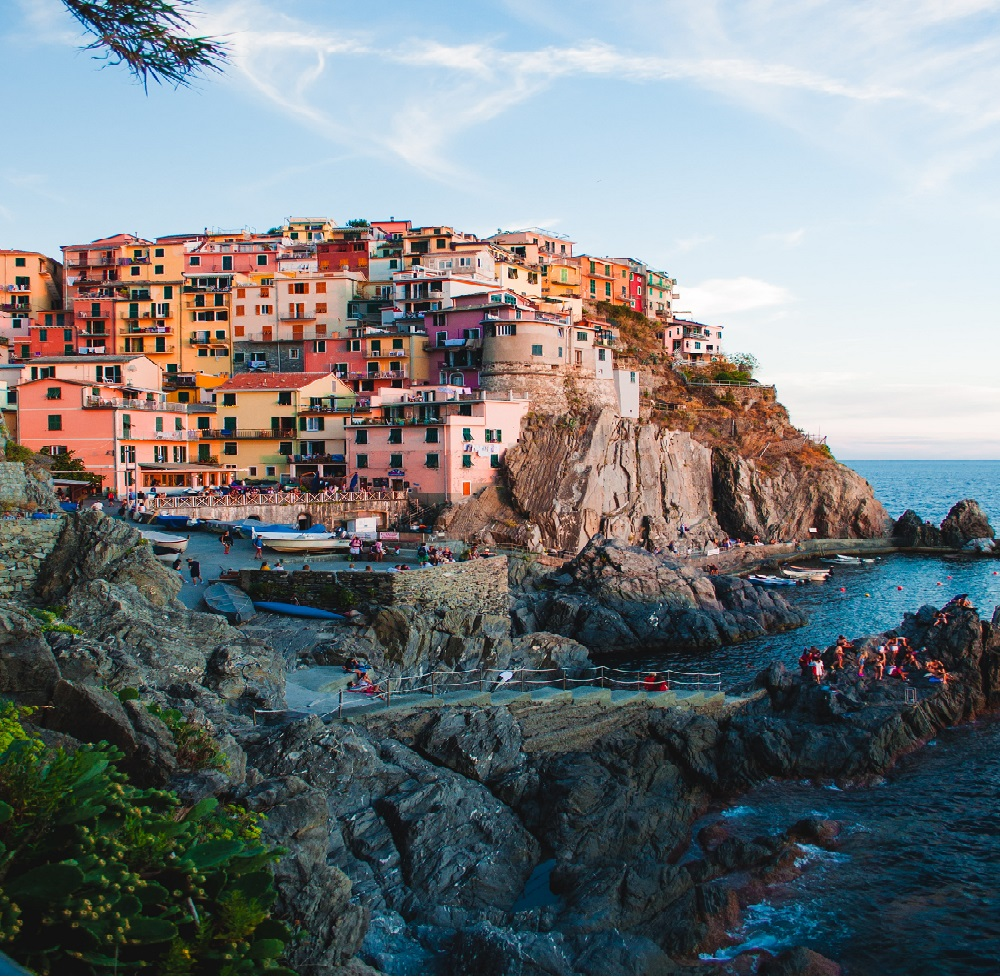

Rom ist nördlicher gelegen als New York.
New York liegt etwa
auf der Höhe von Neapel. „Pizza“ ist eines der wenigen Wörter,
die auf der ganzen Welt verstanden werden.
Durch die Invasion Napoleons wurde die französische Flagge Vorbild
für die italienische. Ihre Farben verkörpern drei Eigenschaften:
Hoffnung (grün), Glaube (weiß) und Nächstenliebe (rot).
Wichtige italienische Entdecker sind Christopher Columbus, Marco
Polo, John Cabot, und Amerigo Vespucci.
Mit mehr als 40 Millionen Besucher, zählt Italien zu den 5
bestbesuchten Ländern in der Welt.
Täglich landen durchschnittlich 3000 Münzen im Trevi-Brunnen in Rom. Seit Ende des 2. Weltkrieges gab es ungefähr 60 Regierungswechsel. Über 75% der italienischen Landschaft besteht aus Hügeln und Bergen. Der Durchschnittsitaliener isst 26kg Pasta im Jahr. Bevor Rom zur Republik wurde, herrschten dort sieben Könige. 
LA CUCINA ITALIANA
Die italienische Küche besteht aus einer Vielzahl von regionalen
Küchen, und bedingt durch die geografische Lage und lange Kochtradition
Italiens kann sie auf zahlreiche Zutaten und Spezialitäten zurückgreifen.
Historisch unterscheidet man vor allem zwischen der Cucina alto-borghese
(womit die exklusive Kochtradition der höheren Stände seit der Renaissance
bezeichnet wird) sowie der Cucina povera (der regionalen bäuerlichen und
städtischen Küche).
Dazu kommt das reichhaltige einheimische Weinangebot
(zum Beispiel Chianti und Barolo). In Italien ist üblicherweise das
Abendessen die Hauptmahlzeit, die aus einer Vorspeise (Antipasto), zwei
Hauptgängen und der Nachspeise besteht.
Wie wenig andere kulinarische Traditionen fand die italienische Küche
seit dem 20. Jahrhundert weltweite Verbreitung, und ihre bekanntesten
Gerichte wie Pasta und Pizza werden heute auf allen Kontinenten zubereitet.
Andere international bekannte Produkte sind italienisches Olivenöl, diverse
Käsesorten (zum Beispiel Parmesan, Mozzarella, Gorgonzola), sowie Wurst und
Fleischerzeugnisse (wie Mortadella, Salami, San-Daniele-Schinken, Parmaschinken). Seit 2010 wird die italienische Küche auf der Liste des immateriellen Kulturerbes der Menschheit der UNESCO geführt.